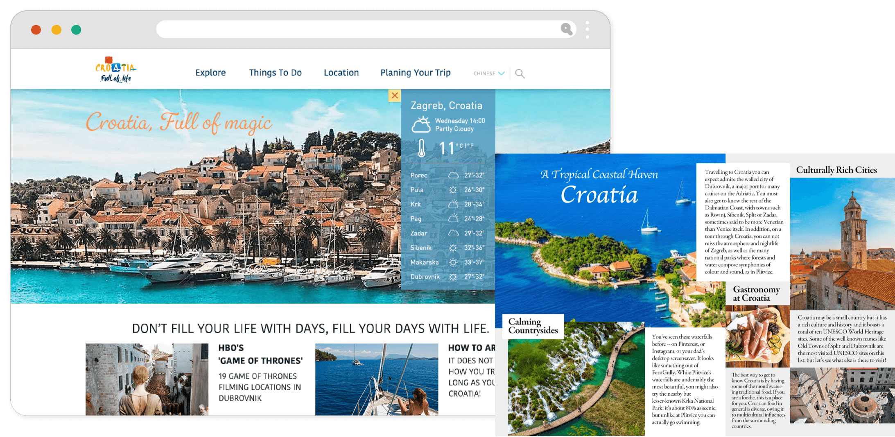
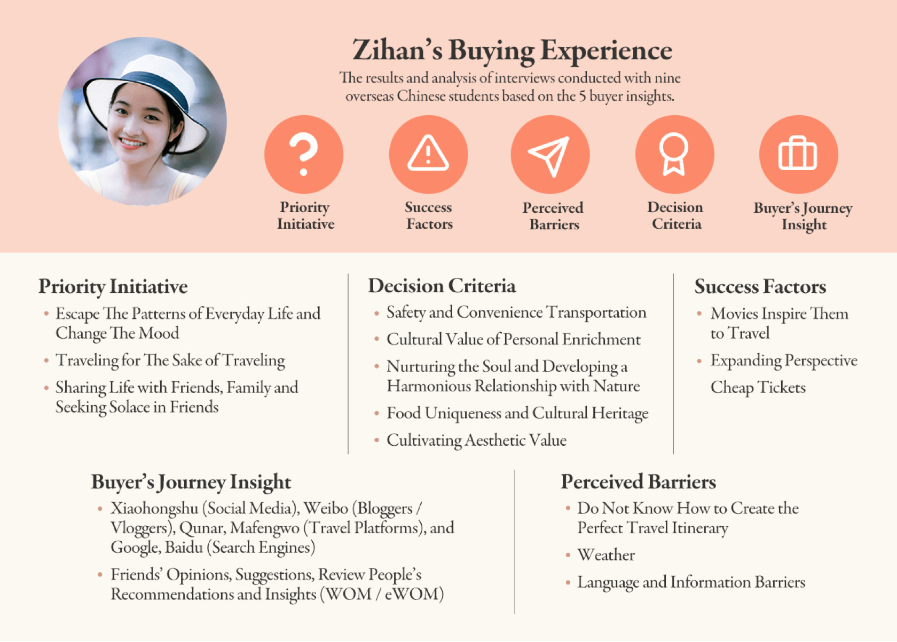
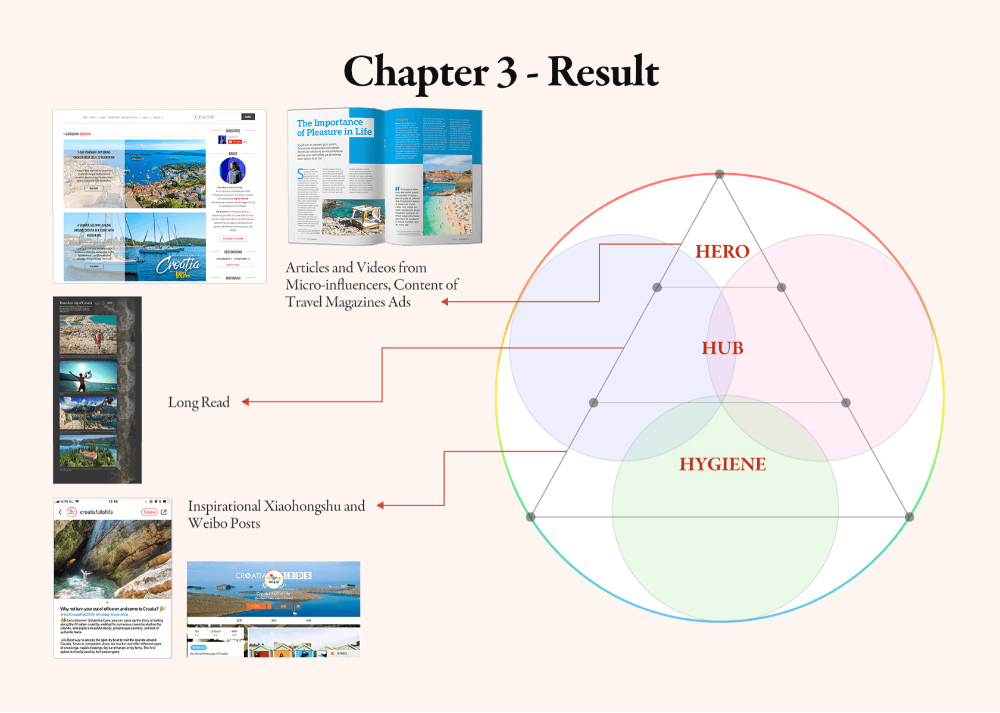

Objective
制定目標
增加中國觀光客到克羅埃西亞旅遊，但在閱讀相關的資料後，發現一直無法達到此目標的真正的問題如下：
1.缺少對於受眾目標的了解：
只有過往中國旅客簡略的人口統計資料、包含年齡、旅遊形式和造訪的景點
2.品牌知名度低：
超過40%的中國人沒聽過克羅埃西亞這個國家。
3.沒有連續性的媒體策略：
克羅埃西亞沒有與任何的廣告公司、旅行社合作，並有計劃性的旅遊
因此將目標改為“藉媒體內容策略來提升目標受眾對克羅埃西亞的認識”
只有過往中國旅客簡略的人口統計資料、包含年齡、旅遊形式和造訪的景點
2.品牌知名度低：
超過40%的中國人沒聽過克羅埃西亞這個國家。
3.沒有連續性的媒體策略：
克羅埃西亞沒有與任何的廣告公司、旅行社合作，並有計劃性的旅遊
因此將目標改為“藉媒體內容策略來提升目標受眾對克羅埃西亞的認識”

Research
研究的方向和重點
基於上訴的問題點，展開了以下的研究：
一開始為了確定公司的商業目標展開了內部訪談和媒體環境調查(包含競品分析、SWOT Anaylsis、公司成員結構)，在找出現階段的問題後，便針對第一個問題進行質量與量化分析(缺少目標受眾的了解)，之後針對第二個問題點(品牌知名度低)來創立行銷活動，當然也要確認此活動是否真有打到Persona的痛點與需求(AB 測試)，最後擬定行銷內容的發布管道。
・研究過程：商業目標研究 - 使用者目標研究 - 系列活動創立 - 內容測試 - 發布
・我的角色：研究員、視覺設計師、媒體和內容策略師
・我的角色：研究員、視覺設計師、媒體和內容策略師
一開始為了確定公司的商業目標展開了內部訪談和媒體環境調查(包含競品分析、SWOT Anaylsis、公司成員結構)，在找出現階段的問題後，便針對第一個問題進行質量與量化分析(缺少目標受眾的了解)，之後針對第二個問題點(品牌知名度低)來創立行銷活動，當然也要確認此活動是否真有打到Persona的痛點與需求(AB 測試)，最後擬定行銷內容的發布管道。
Process
研究的過程
克羅埃西亞國家觀光旅遊局將目前造訪克羅埃西亞的中國旅客分為三大類群：
1.旅遊團體(多為年長者，因語言、文化和環境不熟悉，選擇跟隨旅行團)
2.家族旅遊(中產階級居多，多半會帶小孩)
3.個人自助行(年輕上班族、學生居多，語言能力強，且使用網路找尋資料)
經過討論，建議將目標集中於個人自助行的年輕人，因此目標善於使用網路收尋，相較其它兩個旅遊類群較容易接觸(基於行銷成本、公司資源和媒體環境考量)。2.家族旅遊(中產階級居多，多半會帶小孩)
3.個人自助行(年輕上班族、學生居多，語言能力強，且使用網路找尋資料)

How to Pitch
影響受眾
超過60%的中國年輕人旅遊時會參考KOL的影片和貼文，因此先與KOL合作拍攝旅遊影片，藉此引起受眾對於克羅埃西亞的興趣和喜愛。
約略56%的中國年輕人皆會在騰訊等旅遊平台尋找旅遊靈感和資料，因此與中國各大旅遊平台合作推出廣告，而受眾提到當對於旅遊景點有了基本的認知後，會想更進一步了解旅遊地的歷史和文化，因此也同步推出深度的專欄報導網頁。
最後為讓受眾記住旅遊地的特色與美景，於小紅書和Ｗechat上定期發布旅遊訊息，藉此讓受眾記住旅遊地的特色與美景。
約略56%的中國年輕人皆會在騰訊等旅遊平台尋找旅遊靈感和資料，因此與中國各大旅遊平台合作推出廣告，而受眾提到當對於旅遊景點有了基本的認知後，會想更進一步了解旅遊地的歷史和文化，因此也同步推出深度的專欄報導網頁。
最後為讓受眾記住旅遊地的特色與美景，於小紅書和Ｗechat上定期發布旅遊訊息，藉此讓受眾記住旅遊地的特色與美景。

Limitations and Further Research
研究限制和未來發展
因為地理限制，無法將研究目標集中在中國一線城市，因一、二線人口的收入和旅遊可支配金額皆不同，前往的旅遊景點和消費習慣可能存在落差，舉例來說: 一線城市之青年可能因為收入，社經地位較高，會傾向於精品名牌店購物，而非當地特色攤販。而未來若需要進一步研究，建議克羅埃西亞觀光旅遊局詳細的審視研究所有的競爭國家的媒體操作策略，藉研究結果來參考和定位克羅埃西亞的旅遊媒體形象和策略。